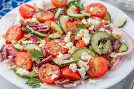

Ingredient Checklist
2 cups mixed greens
1 cup roasted vegetables, chopped if desired (see associated recipes)
1 cup roasted tofu (see associated recipes)
1 tablespoon pumpkin seeds
2 tablespoons Citrus-Lime Vinaigrette (see associated recipes)
Arrange greens, veggies, tofu and pumpkin seeds in a 4-cup sealable container or bowl. Drizzle vinaigrette over the salad just before serving.